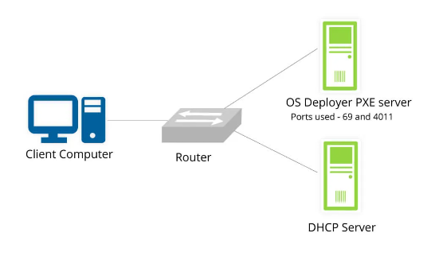
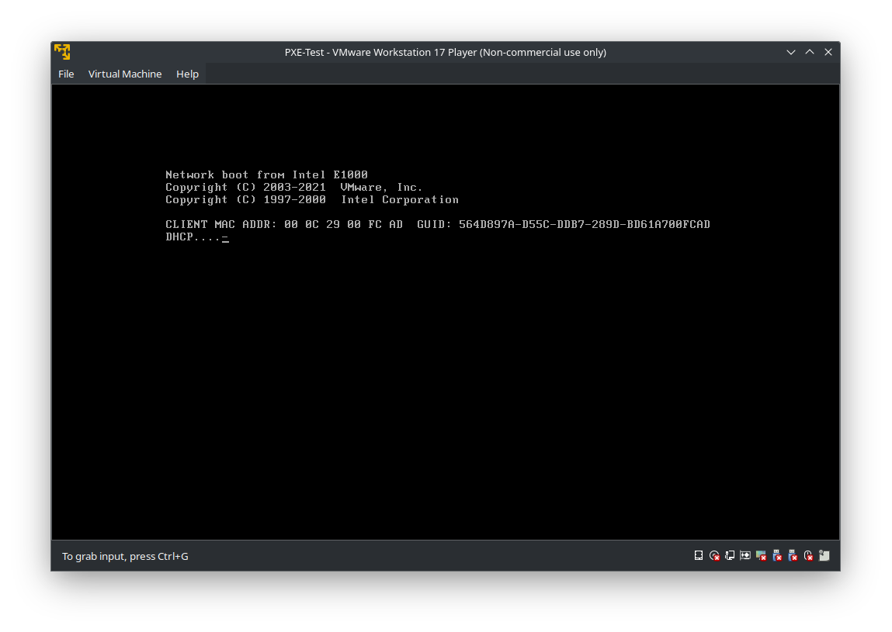
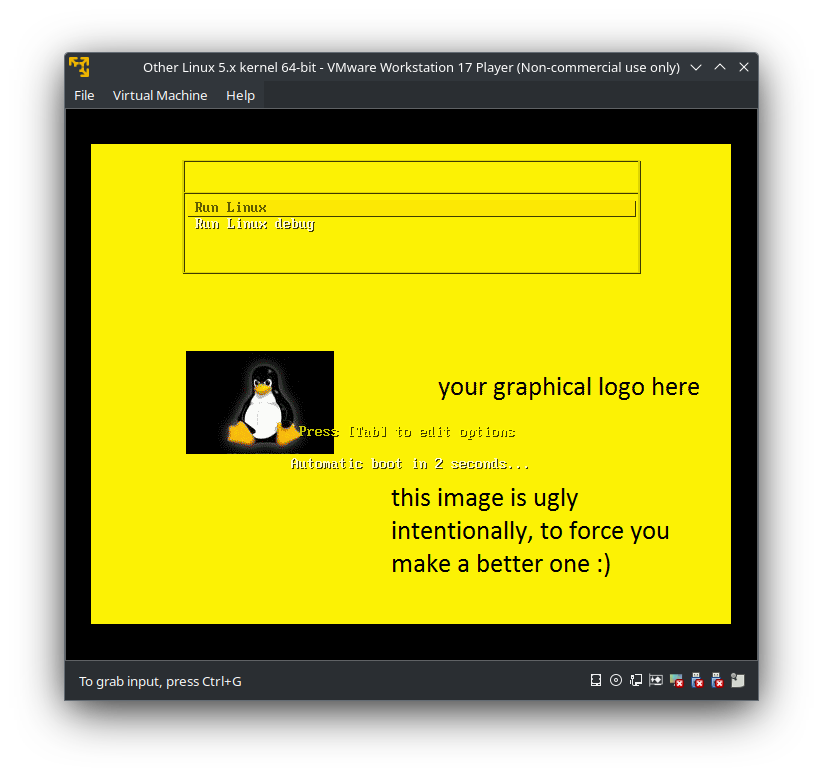

I wrote a blog Custom your Linux live CD using linux-live two months ago, explaning how to make a “live Linux CD” to provide user with a rescue OS for recovering the corrupted system data. Our business recently came up with a new need to simplify this process: let users boot directly from the network without the hassle of creating a liveCD or liveUSB from the ISO image. To archieve this goal, we need to use a technology called PXE.
PXE stands for Preboot Execution Environment. It’s a standardized client-server architecture that allows a computer to boot and run software even if there is no operating system installed on the local hard drive. PXE is commonly used in enterprise environments for tasks like operating system deployment, diskless booting, and remote troubleshooting. It’s particularly useful for large-scale deployments where manually installing or updating operating systems on individual machines would be impractical.
The first time I was exposed to this technology was when I was participating in the ACM competition in college. As the organizer of the competition, our school installed Ubuntu in batches on hundreds of computers in the competition venue at the same time. This gave me a huge shock because it’s so efficient that I feel like it’s like magic. It took me a long time to realize that this was PXE boot. Only one PXE server and a LAN are needed to initialize hundreds of computers at the same time.
In this article I will show you how to boot from the Linux live OS via network and unravel the mysteries of PXE. I assume you have some baisc knowledge on Linux boot process. If you are not familiar with it, I recommend you to read this article I wrote before : How Linux Boots.
How PXE works
Here’s how PXE typically works:

PXE Client is The computer that needs to boot from the network (i.e., the one without a valid local operating system). The client computer’s network interface card (NIC) must support PXE. Most modern NICs have PXE support built-in. When a PXE-capable client boots up, it sends out a special DHCP (Dynamic Host Configuration Protocol) request on the network. The DHCP server responds with the IP address of a PXE server and the location of the boot file. The client then downloads the boot file using TFTP (Trivial File Transfer Protocol) and executes it. This boot file typically contains a bootloader such as GRUB or SYSLINUX, which can then load an operating system image over the network.
Here’s a detailed sequence diagram explaning the process on how PXE server interact with TFTP server, DHCP server and HTTP sever.
sequenceDiagram participant PXE-Client participant TFTP-Server participant DHCP-Server participant HTTP-Server PXE-Client->>DHCP-Server: Request IP Address DHCP-Server->>PXE-Client: Return IP Address of TFTP Server and the location of bootstrap file (pxelinux.0) PXE-Client->>TFTP-Server: Request bootstrap file (pxelinux.0) TFTP-Server->>PXE-Client: Transfer bootstrap file (pxelinux.0) PXE-Client->>PXE-Client: Execute bootstrap (pxelinux.0), request configuration file (pxelinux.cfg) PXE-Client->>PXE-Client: Load PXE configuration files PXE-Client->>PXE-Client: User select boot menu entry PXE-Client->>TFTP-Server: Request Linux kernel (vmlinuz), initramfs TFTP-Server->>PXE-Client: Transfer Linux kernel (vmlinuz), initramfs PXE-Client->>TFTP-Server: Load and run Linux kernel with specified kernel arguments in PXE configuration PXE-Client->>HTTP-Server: Request other data (*.rpm, *.iso) via HTTP HTTP-Server->>PXE-Client: Response data
After the bootloader (i.e., GRUB or SYSLINUX) load the kernel and initramfs, the kernel will begin to take control and load more data for future use. For example, if you using PXE to install Linux OS, you may need a HTTP server to host the repodata and RPM packages, the address of the HTTP server might need to be provided to kernel as a argument. Your can also use to SMB/NFS/SFTP/FTP server to replace HTTP (It all depend on how your initramfs will load data).
The TFTP service, DHCP service and HTTP service can be hosted on the same PXE server. It will be much more clear and simple:
sequenceDiagram participant PXE-Client participant PXE-Server PXE-Client->>PXE-Server: Request IP Address PXE-Server->>PXE-Client: Return IP Address of TFTP Server and the location of bootstrap file (pxelinux.0) PXE-Client->>PXE-Server: Request bootstrap file (pxelinux.0) PXE-Server->>PXE-Client: Transfer bootstrap file (pxelinux.0) PXE-Client->>PXE-Client: Execute bootstrap (pxelinux.0), request configuration file (pxelinux.cfg) PXE-Client->>PXE-Client: Load PXE configuration files PXE-Client->>PXE-Client: User select boot menu entry PXE-Client->>PXE-Server: Request Linux kernel (vmlinuz), initramfs PXE-Server->>PXE-Client: Transfer Linux kernel (vmlinuz), initramfs PXE-Client->>PXE-Server: Load and run Linux kernel with specified kernel arguments in PXE configuration PXE-Client->>PXE-Server: Request other data (*.rpm, *.iso) via HTTP PXE-Server->>PXE-Client: Response data
Setup PXE server
To setup a simple PXE server quickly, I choose to use OpenEuler 22.03 as the server to host the three service, you can simply use yum to install the related packages : sudo yum install -y dhcp xinetd tftp-server
Configure DHCP and TFTP server
configure
/etc/dhcp/dhcpd.confas following:allow booting;
allow bootp;
ddns-update-style interim;
ignore client-updates;
subnet 192.168.114.0 netmask 255.255.255.0 {
option subnet-mask 255.255.255.0;
option domain-name-servers 192.168.114.0;
range dynamic-bootp 192.168.114.100 192.168.114.200;
default-lease-time 21600;
max-lease-time 43200;
next-server 192.168.114.10;
filename "pxelinux.0";
}If you are going to setup PXE server for x86_64 client, you may use SYSLINUX or ISOLINUX as the bootloader, the
filenamehere should be"pxelinux.0". If you want to setup it for AARCH64 client, you may use GRUB instead, and thefilenameshould be replaced by"grubaa64.efi"(you may search it in ESP partition)edit
/etc/xinetd.d/tftp, modify thedisable = yestodisable = noservice {
socket_type = dgram
protocol = udp
wait = yes
user = root
server = /usr/sbin/in.tftpd
server_args = -s /var/lib/tftpboot
disable = no
per_source = 11
cps = 100 2
flags = IPV4
}Once the services are configured, close the
firewalld, restart and enable thedhcpd,xinetdservice:$ sudo systemctl disable firewalld
$ sudo systemctl restart dhcpd
$ sudo systemctl restart xinetd
$ sudo systemctl enable dhcpd
$ sudo systemctl enable xinetdCopy boot files to TFTP server root
Copy the boot files, kernel image and initramfs image to the root of TFTP server. The root directory should be configured in
/etc/xinetd.d/tftpas/var/lib/tftpbootby default.# copy boot files
$ sudo cp /path/to/{pxelinux.0, vesamenu.c32, syslinux.bin ...} /var/lib/tftpboot
# copy kernel and initramfs
$ sudo cp /path/to/{vmlinuz, initramfs.img} /var/lib/tftpbootFor x86_64 clients that use bootloader like ISOLINUX or SYSLINUX: the bootfiles may contain the following files:
$ ls /var/lib/tftpboot
ldlinux.c32 libutil.c32 pxelinux.0 syslinux.com vesamenu.c32 isolinux.bin libcom32.c32For aarch64 clients that use GRUB: the bootfiles may be like:
$ ls /var/lib/tftpboot
BOOTAA64.EFI grubaa64.efi mmaa64.efiConfigure boot configuration file
For x86_64 clients that use bootloader like ISOLINUX or SYSLINUX, the boot configuration will be read from
pxelinux.cfg/default.$ sudo mkdir /var/lib/tftpboot/pxelinux.cfg
$ vim /var/lib/tftpboot/pxelinux.cfg/defaultCreate the configuration at
/var/lib/tftpboot/pxelinux.cfgand configure it:UI vesamenu.c32
LABEL default
MENU LABEL Run Linux
KERNEL vmlinuz
APPEND vga=769 initrd=initramfs.img load_ramdisk=1 prompt_ramdisk=0 rw printk.time=0 apparmor=0 from=http://192.168.114.10/linux-x86_64.isoThe configuration file will use the TFTP server root
/var/lib/tftpbootas the root directory (i.e, thevmlinuzrefers to/var/lib/tftpboot/vmlinuzwhileinitramfs.imgrefers to/var/lib/tftpboot/initramfs.img)

For aarch64 clients that use GRUB as the bootloader, you just need to configure
/var/lib/tftpboot/grub.cfginstead.Configure HTTP server
Configure the PXE client to boot from network and reboot it, it will works if all procedure was done correctly!